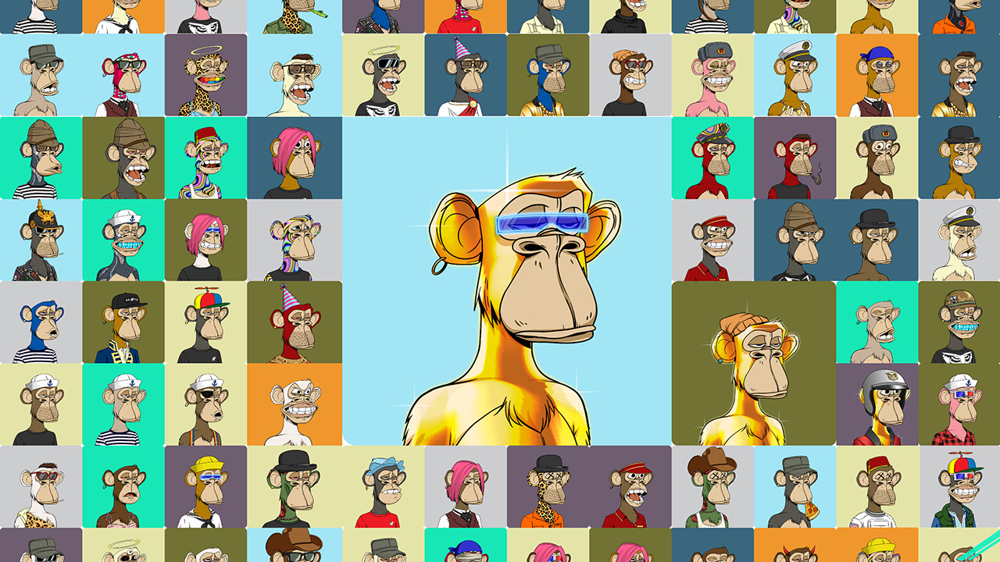

Avatares: Um avatar é um cibercorpo digital, que serve como representação de si mesmo, com o objetivo de te personificar em um ambiente digital, ou seja é a manifestação corporal de alguém no espaço cibernético do metaverso, podendo ser a reconstrução da sua figura ou criação de um personagem que te represente.
Criptomoedas: Criptomoedas são moedas digitais que a partir de sistemas de criptografia avançados, são criadas em uma rede blockchain, que é um grande banco de dados que permite o envio e o recebimento de informação,contribuindo para um sistema de pagamento digital que não necessita de bancos para confirmar as transações.
NFTs: Sigla para “Non fungible token” ou “Token não Fungível", basicamente, NFT é uma espécie de certificado digital ou título de propriedade estabelecido por uma blockchain, suas propriedade são registradas na blockchain e podem ser transferidas pelo proprietário, permitindo que as NFTs sejam vendidas.
